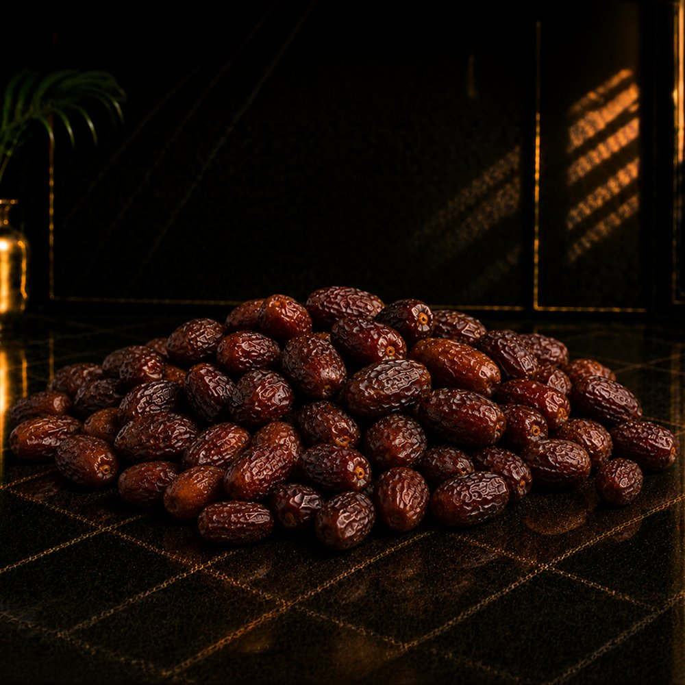
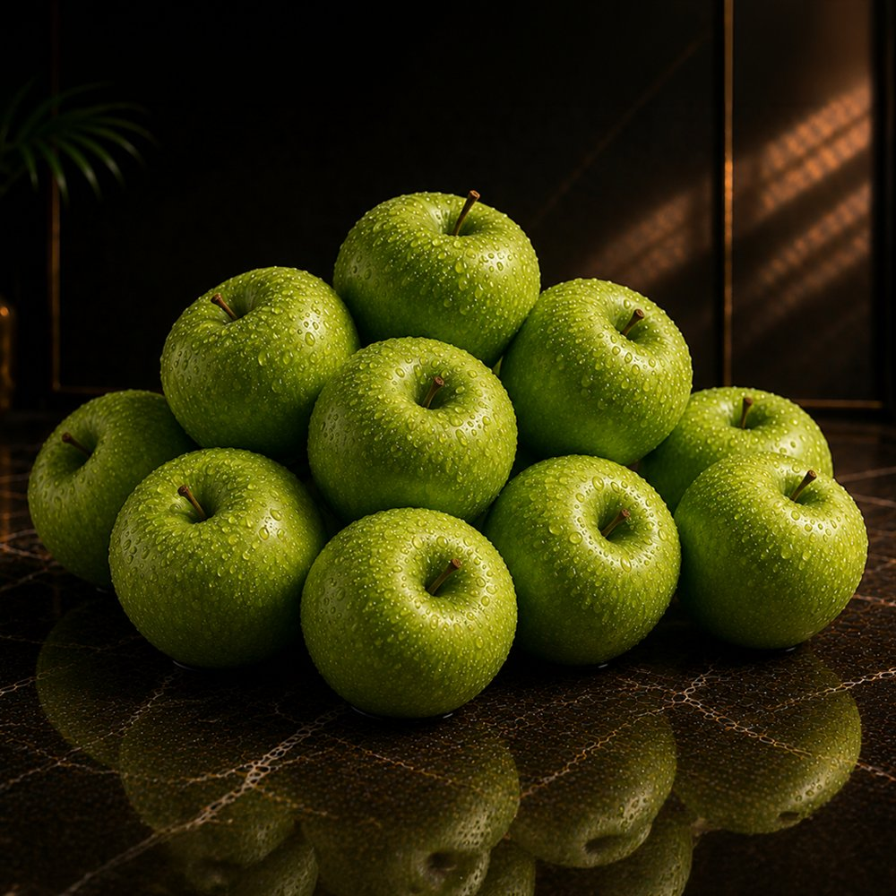
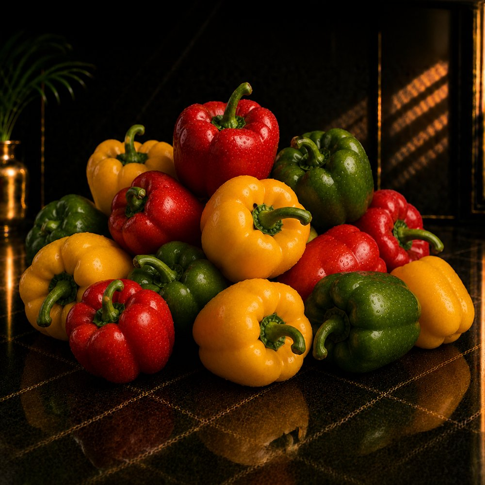

The Fresh Valley Philosophy
The Art of Hosting
Fruit and vegetables are no longer just groceries. They have become part of how we welcome people — part of the gathering, part of the moment, part of the table.
A quiet change is happening in how we host. The table is set earlier. And produce sits at the centre of it.
For a long time, fruit and vegetables were something you cooked with and put away. Today, they are something you present. A bowl of perfect fruit sits out before anyone arrives. A board of grapes and dates greets a guest at the door.
This is not about excess. It is about intention — the small, generous gesture of having something beautiful ready for the people you care about. Fresh Valley exists to make that gesture effortless.

Produce has left the kitchen.
It used to live in the fridge until it was needed. Now it sits on the counter, on the table, in the centre of the room — chosen as much for how it looks as for how it tastes.
When produce becomes part of the décor of an evening, quality stops being a private matter. A guest can see a perfect strawberry from across the room. That is a new kind of standard to live up to — and the one we built Fresh Valley around.

Quality you can see.
Presentation begins long before the table. It begins with grading — with choosing fruit of an even size, a true colour, a clean skin.
An export-grade apple does not need styling. Piled simply in a bowl, it already looks considered, because every piece is consistent. This is the quiet luxury of produce that has been properly selected: it makes you look like you tried, when really you just chose well.

We do the curating.
Hosting well should not feel like work. So we arrange the produce for you — a hosting box of fruit, colour and a few quiet luxuries, delivered ready for the table.
You open the box, set it out, and the room changes. No planning, no second trip to the market. Just a generous, beautiful start to the evening, chosen by people who think about this all day.
Explore the boxesWhen the produce is this good, hosting feels generous before you have done a thing. The Fresh Valley belief
Where it matters
Made for every kind of moment
How we think about it
Three principles of better hosting
The best hosts are not the busiest. They are the ones who prepared a little, so the evening can feel easy. Keep good produce in the house and you are always ready.
You do not need to over-arrange or over-explain. Produce this good carries the table on its own. Set it out simply and let it do the work.
Generosity is the whole point. A full bowl, a varied board, a little more than enough — that is how a guest knows they are welcome.
Begin
Set a better table this week.
Start with a hosting box, or build your own selection from the collection. Either way, hosting just got easier.